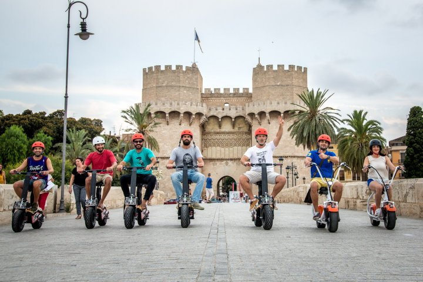

Maen Bareng Temen
Liburan memang momen yang paling ditunggu. Terutama untuk orang-orang dengan aktivitas yang rutin dan padat. Akan tetapi, liburan tentu akan lebih menyenangkan bila diisi dengan rekreasi, terutama bersama teman-teman, sehingga perjalanan akan menjadi lebih menyenangkan. Selain itu, kamu juga bisa lebih berhemat. Sudah tidak sabar berpetualang ketika liburan? Saatnya kamu mengontak beberapa teman untuk membuat planning liburan.
Bepergian ketika liburan bersama teman tentu menyenangkan. Kamu bisa melakukan berbagai macam aktivitas menyenangkan bersama. Bahkan, ketika harus menunggu di bandara atau terminal ada berbagai obrolan menyenangkan yang bisa dilakukan.
Bepergian bersama teman juga lebih nyaman dan aman bagi kamu. Terutama ketika pergi ke tempat baru. Ketika berada di lingkungan baru tentu kamu harus lebih berhati-hati. Bila bepergian bersama, tentu kalian lebih bisa saling menjaga.
Selain itu, dengan bepergian bersama, kamu dan teman-teman akan lebih mengenal karakter masing-masing. Saat membuat perencanaan bersama akan membuat kalian berinteraksi dengan waktu yang lama. Hal ini tentu saja membuat karakter asli dari masing-masing menjadi lebih terlihat. Kalian tentu akan semakin saling memahami dan menjadi lebih dekat.
Hal yang lebih penting ketika bepergian bersama teman adalah kamu akan menghemat budget dengan lebih baik. Ada beberapa pengeluaran yang bisa dilakukan secara bersama-sama, seperti penginapan, transportasi, dan biaya makan. Untuk kamu yang suka foto, ketika ada spot-spot menarik, kamu dan teman bisa bergantian untuk mengambil foto yang keren dan ciamik.

* Saat pergi bersama teman, ketika pergi ke tempat baru dan tidak tahu jalan, kamu punya teman diskusi untuk mencari arah dan jalan yang tepat. Jadi kamu tidak akan nyasar sendirian dan kebingungan.
* Buat kamu yang pelupa dan sering ketinggalan barang, tentu akan lebih aman bila pergi bersama teman yang teliti dan hati-hati. Ia akan mengingatkan kamu untuk tidak ketinggalan barang. Bahkan, sebelum kalian check out dari hotel, akan ada orang yang melakukan sweeping barang di dalam kamar.
* Bila kamu ingin membeli oleh-oleh dalam jumlah banyak, kamu bisa sharing mengenai souvenir yang akan dibeli. Siapa saja yang diberikan oleh-oleh, dan barang apa yang cocok untuk kamu. Selain itu, tidak perlu takut bagasi overweight. Barang bawaan tersebut bisa kamu bagi bersama teman.
* Momen berfoto tentu akan lebih menyenangkan bila bersama dengan teman. Apalagi bila ada spot menarik dan harus diambil dari jarak jauh. Temanmu bisa membantu untuk mengabadikannya.
* ika kamu liburan ke luar kota, tentu kamu akan melakukan perjalanan panjang dan melelahkan. Apalagi kalau kamu harus menunggu kendaraan berjam-jam. Bila ada teman, perjalanan akan lebih menyenangkan bukan?

 Sebelum pergi liburan tentu harus ada perencanaan yang kamu dan teman kamu lakukan. Mulai dari travel, tujuan liburan, budget yang disiapkan, dan hal-hal lainnya. Untuk liburan pun sebenarnya tidak harus ke luar kota atau ke luar negeri lho. Ada banyak cara asik menghabiskan waktu untuk liburan, dengan budget terbatas.
Contohnya saja kamu dan teman kamu pergi berkeliling kota, ke beberapa tempat wisata atau tempat bersejarah yang ada di kota kamu. Selain untuk berjalan-jalan, di sisi lain kamu menjadi lebih mengetahui sejarah Indonesia. Selain itu, bisa juga dengan melakukan silaturahmi ke rumah saudara atau teman lama. Tentu mereka akan merasa senang sekali.
Tidak hanya berjalan-jalan, sebetulnya kamu pun bisa menghabiskan waktu untuk belajar memasak atau kegiatan lain untuk menambah keahlian. Bahkan nonton film terbaru di bioskop atau streaming film di rumah akan menjadi kesenangan tersendiri.
Sebelum pergi liburan tentu harus ada perencanaan yang kamu dan teman kamu lakukan. Mulai dari travel, tujuan liburan, budget yang disiapkan, dan hal-hal lainnya. Untuk liburan pun sebenarnya tidak harus ke luar kota atau ke luar negeri lho. Ada banyak cara asik menghabiskan waktu untuk liburan, dengan budget terbatas.
Contohnya saja kamu dan teman kamu pergi berkeliling kota, ke beberapa tempat wisata atau tempat bersejarah yang ada di kota kamu. Selain untuk berjalan-jalan, di sisi lain kamu menjadi lebih mengetahui sejarah Indonesia. Selain itu, bisa juga dengan melakukan silaturahmi ke rumah saudara atau teman lama. Tentu mereka akan merasa senang sekali.
Tidak hanya berjalan-jalan, sebetulnya kamu pun bisa menghabiskan waktu untuk belajar memasak atau kegiatan lain untuk menambah keahlian. Bahkan nonton film terbaru di bioskop atau streaming film di rumah akan menjadi kesenangan tersendiri.

#)Sebelum bepergian kalian harus sudah menentukan tempat yang ingin dituju. Bila ingin pergi ke sebuah kota, maka tentukan destinasi yang akan dikunjungi dengan tujuan yang ingin dicapai ketika liburan.
#)Kamu dan teman kamu harus memperkirakan budget yang akan dikeluarkan. Untuk itu kamu harus membuat list segala kebutuhan dan perkiraan pengeluaran dan menghitung besaran nominalnya agar kelak kamu tidak kekurangan uang atau mengeluarkan uang lebih dari yang sudah dipersiapkan.
#)Walaupun bepergian bersama, namun tetap harus ada pembagian tugas dan tanggung jawab. Tentukan pula siapa yang akan memegang komando selama kalian bepergian.
#)Hindari pembicaraan sensitif yang dapat memicu pertengkaran. Berkompromi lah untuk membicarakan masalah barang bawaan serta titik berkumpul dan waktu untuk berkumpul.
#)Jaga barang bawaan masing-masing dan jangan sampai ada yang tertinggal atau hilang.
#)Tentunya, jangan lupa membawa kamera untuk mengabadikan momen kebersamaan selama liburan. br